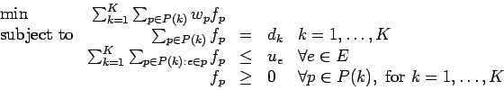

Due: Tuesday, March 28, 2006.
- 1.
- Use the network simplex algorithm to find the minimum cost flow for the problem
with
the following linear programming representation:
Use the initial basic feasible solution with basic variables:
and nonbasic variables
You should need three iterations.
- 2.
- A multicommodity network flow problem on a graph G=(V,E) with K commodities
can be expressed in a path-based formulation, with a set of paths P(k)
for each commodity k.
Assume each commodity has a single source node and a single sink node.
This leads to the linear program

where dk is the demand for commodity k,
ue is the capacity of edge e,
and wp is the cost of sending one unit of flow along path p.
Let cek be the cost of shipping one unit of commodity k on arc e;
we have
for .
The set P(k) typically does not include all paths that can be used by commodity k.
Assume the LP is solved, and you know a primal and dual optimal solution.
Show that determining whether another path should be added to one of the
sets P(k) requires solving a shortest path problem.
- 3.
- Consider a multicommodity network flow problem with three commodities
on a graph G=(V,E) with five nodes and seven edges.
The seven edges and their costs and capacities are as follows:
The costs are identical for each commodity.
25 units of commodity A need to be moved from node 1 to node 3.
20 units of commodity B need to be moved from node 5 to node 3.
20 units of commodity C need to be moved from node 4 to node 1.
The current set of paths consists of
and
for commodity A,
for commodity B,
and
for commodity C.
Use the methodology of Question 2 to show
that this is not an optimal set of paths.
What is the optimal solution?
- 4.
- Chvatal, Question 15.8 on page 238.
About this document ...
John E. Mitchell
2006-03-10